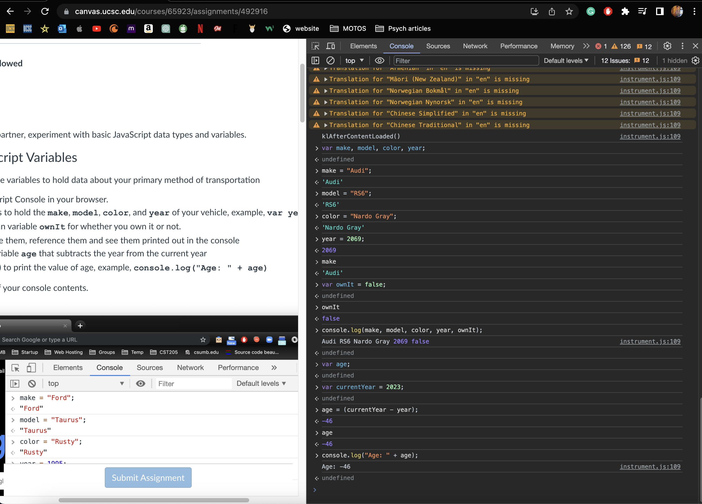
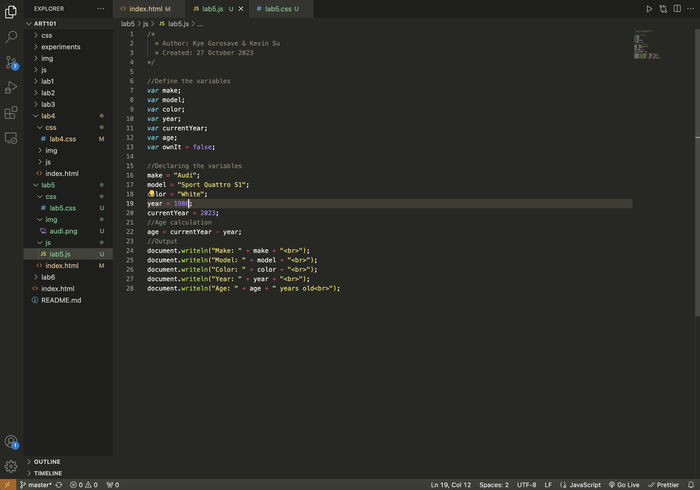
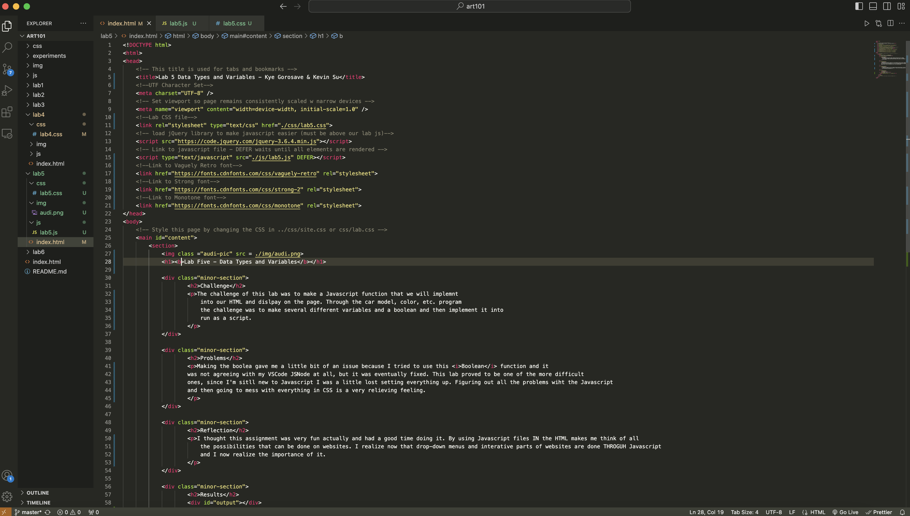
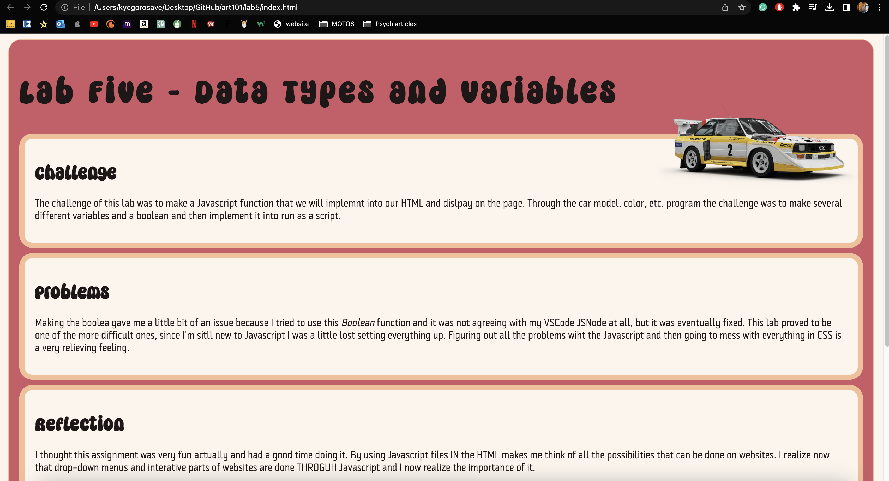
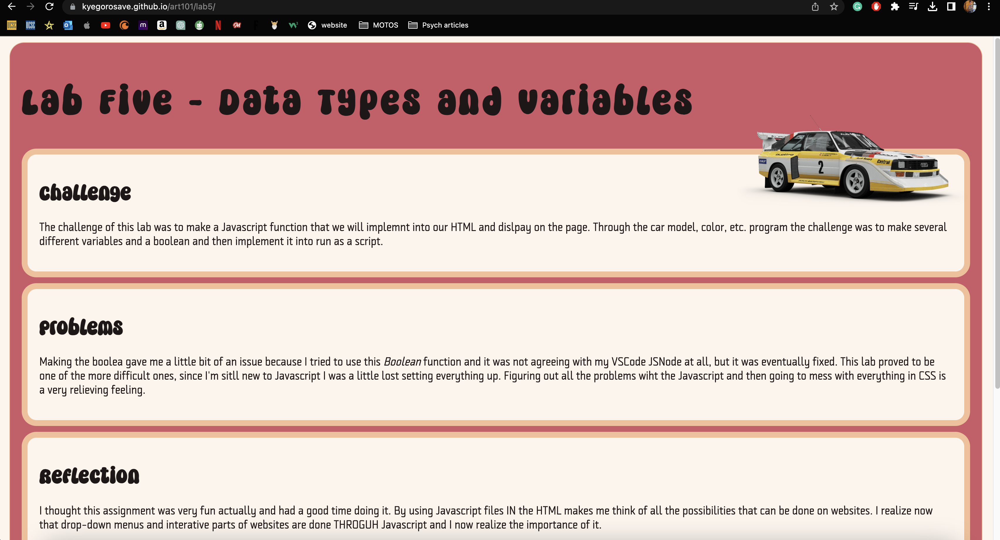

Lab Five - Data Types and Variables
Challenge
The challenge of this lab was to make a Javascript function that we will implemnt into our HTML and dislpay on the page. Through the car model, color, etc. program the challenge was to make several different variables and a boolean and then implement it into run as a script.
Problems
Making the boolean gave me a little bit of an issue because I tried to use this Boolean function and it was not agreeing with my VSCode JSNode at all, but it was eventually fixed. This lab proved to be one of the more difficult ones, since I'm sitll new to Javascript I was a little lost setting everything up. Figuring out all the problems wiht the Javascript and then going to mess with everything in CSS is a very relieving feeling.
Reflection
I thought this assignment was very fun actually and had a good time doing it. By using Javascript files IN the HTML makes me think of all the possibilities that can be done on websites. I realize now that drop-down menus and interative parts of websites are done THROGUH Javascript and I now realize the importance of it.
Results
Script Output
Javascript Web Browser
Javascript VSCode File
Index.HTML & Local Lab 5
 Uploaded/Live Lab 5
By: Kye Gorosave & Kevin Su